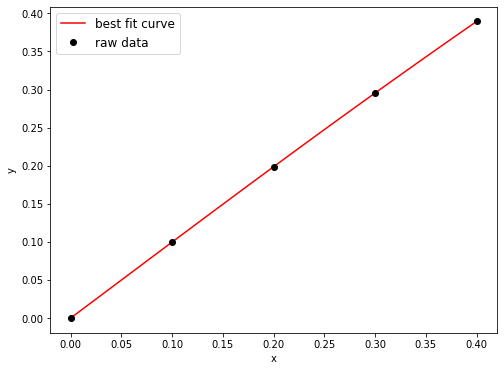
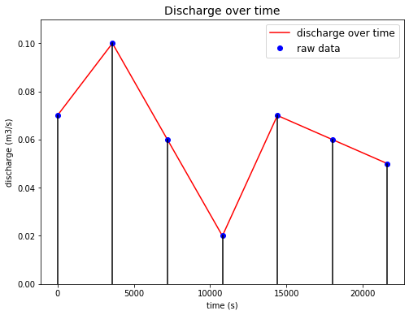
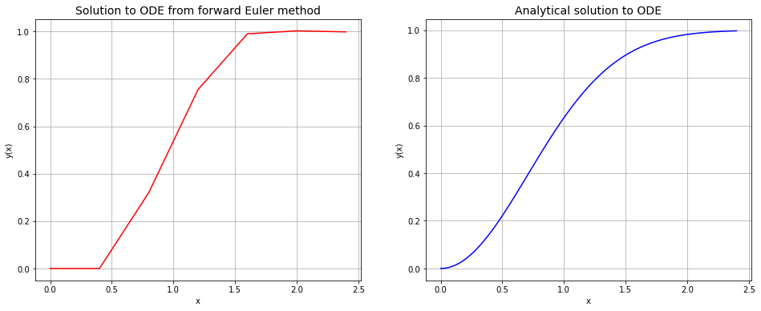

# This cell just imports relevant modules
import numpy as np
import scipy
import scipy.interpolate as si
import scipy.optimize as optimize
from math import pi, exp
%matplotlib inline
import matplotlib.pyplot as plt
Numerical differentiation¶
Lecture 8, slide 16
Computing first derivatives using central differences
x = np.array([0.0, 0.1, 0.2, 0.3, 0.4])
y = np.array([0.0, 0.0998, 0.1987, 0.2955, 0.3894])
# Here, the argument value of 0.1 is the 'sample distance' (i.e. dx)
derivatives = np.gradient(y, 0.1)
for i in range(0, len(x)):
print("The derivative at x = %f is %f" % (x[i], derivatives[i]))
The derivative at x = 0.000000 is 0.998000
The derivative at x = 0.100000 is 0.993500
The derivative at x = 0.200000 is 0.978500
The derivative at x = 0.300000 is 0.953500
The derivative at x = 0.400000 is 0.939000
lp = si.lagrange(x, y)
xi = np.linspace(0, 0.4, 100)
fig = plt.figure(figsize=(8,6))
plt.plot(xi, lp(xi), 'r', label='best fit curve')
plt.plot(x, y, 'ko', label='raw data')
plt.xlabel('x')
plt.ylabel('y')
plt.legend(loc='best', fontsize=12)
plt.show()

Numerical integration¶
Lecture 8, slide 32
time = np.array([0, 1, 2, 3, 4, 5, 6]) # Time in hours
discharge = np.array([0.07, 0.1, 0.06, 0.02, 0.07, 0.06, 0.05]) # Flow rate in m**3/s
time = time*3600.0 # Convert time in hours into time in seconds
integral = np.trapz(discharge, x=time) # Integrate using the trapezoidal rule. Units are m**3
print("The integral of the discharge data w.r.t. time is %.d m3" % integral)
The integral of the discharge data w.r.t. time is 1332 m3
t = np.ones((len(time), 2))
for i in range(len(time)):
t[i] = t[i] * i
t = t * 3600
y = np.zeros((len(discharge), 2))
for i in range(len(discharge)):
y[i][1] = discharge[i]
fig = plt.figure(figsize=(8,6))
plt.plot(time, discharge, 'r', label='discharge over time')
plt.plot(time, discharge, 'bo', label='raw data')
for i in range(len(t)):
plt.plot(t[i], y[i], 'k')
plt.xlabel('time (s)')
plt.ylabel('discharge (m3/s)')
plt.legend(loc='best', fontsize=12)
plt.title('Discharge over time', fontsize=14)
plt.ylim(0, 0.11)
plt.show()

area = 0
dt = 3600
for i in range(1,len(time)):
area += 0.5 * (discharge[i]+discharge[i-1]) * dt
print("Area under all trapeziums =", area, "m3")
Area under all trapeziums = 1332.0 m3
Forward Euler Method¶
Lecture 8, slide 80
print("Applying the forward Euler method to solve: dy/dx = 2*x*(1-y)...")
def derivative(x,y):
return 2*x*(1-y)
n = 7 # Number of desired solution points
dx = 0.4 # Distance between consecutive solution points along the x axis
x = np.zeros(n) # x value at each solution point, initially full of zeros.
y = np.zeros(n) # y value at each solution point, initially full of zeros.
# Now set up the initial condition. These two lines aren't really needed
# since we have already initialised each component of the array to zero,
# but we'll put them here for completeness.
x[0] = 0
y[0] = 0
print("At x = %.f, y = %.f" % (x[0], y[0])) # Print out the initial condition
for i in range(0, n-1):
x[i+1] = x[i] + dx
y[i+1] = y[i] + derivative(x[i],y[i])*dx
print("At x = %.1f, y = %.1f" % (x[i+1], y[i+1]))
Applying the forward Euler method to solve: dy/dx = 2*x*(1-y)...
At x = 0, y = 0
At x = 0.4, y = 0.0
At x = 0.8, y = 0.3
At x = 1.2, y = 0.8
At x = 1.6, y = 1.0
At x = 2.0, y = 1.0
At x = 2.4, y = 1.0
xi = np.linspace(0, 2.4, 100)
yi = np.zeros(len(xi))
for i in range(len(xi)):
yi[i] = 1 - exp(-xi[i]**2) # analytical solution
fig = plt.figure(figsize=(16,6))
ax1 = fig.add_subplot(121)
ax1.plot(x, y, 'r')
ax1.set_xlabel('x')
ax1.set_ylabel('y(x)')
ax1.set_title("Solution to ODE from forward Euler method", fontsize=14)
ax1.grid(True)
ax2 = fig.add_subplot(122)
ax2.plot(xi, yi, 'b')
ax2.set_xlabel('x')
ax2.set_ylabel('y(x)')
ax2.set_title("Analytical solution to ODE", fontsize=14)
ax2.grid(True)
plt.show()

Root finding¶
Bisection method¶
Lecture 8, slide 83
Finding the root using bisection method in Python through scipy.optimize.bisect
def f(x):
return x*exp(x) - 1
# We must specify limits a and b in the arguments list
# so the method can find the root somewhere in between them.
bisect_root = optimize.bisect(f, a=0, b=1)
# Print out the root. Also print out the value of f at the root,
# which should be zero if the root has been found accurately.
print("The root of the function f(x) is: %.6f. At this point, f(x) = %.6f" % (bisect_root, f(bisect_root)))
The root of the function f(x) is: 0.567143. At this point, f(x) = 0.000000
Newton-Raphson method¶
Lecture 8, slide 114
Finding the root using Newton-Raphson method in Python through scipy.optimize.newton
def f(x):
return x*exp(x) - 1
# We must provide the method with a starting point x0 (here we have chosen x0=0).
newton_root = optimize.newton(f, x0=0)
print("The root of the function f(x) is: %.6f. At this point, f(x) = %.6f" % (newton_root, f(newton_root)))
The root of the function f(x) is: 0.567143. At this point, f(x) = -0.000000
if np.allclose(bisect_root, newton_root) == True:
print("Roots obtained from bisection and Newton-Raphson methods are the same")
else:
print("Roots obtained from bisection and Newton-Raphson methods are NOT the same")
x = np.linspace(-1, 1, 100)
y = x * np.exp(x) - 1
yi = np.zeros(len(x))
fig = plt.figure(figsize=(12,6))
ax1 = fig.add_subplot(121)
ax1.plot(x, y, 'r', label='f(x) = x * exp(x) - 1')
ax1.plot(x, yi, 'k', label='y=0')
ax1.plot(bisect_root, f(bisect_root), 'ro', label='Bisection root: x = %.6f' % (bisect_root))
ax1.set_xlabel('x')
ax1.set_ylabel('y')
ax1.set_title('Bisection method', fontsize=14)
ax1.legend(loc='best', fontsize=12)
ax1.grid(True)
ax2 = fig.add_subplot(122)
ax2.plot(x, y, 'b', label='f(x) = x * exp(x) - 1')
ax2.plot(x, yi, 'k', label='y=0')
ax2.plot(newton_root, f(newton_root), 'bo', label='Newton-Raphson root: x=%.6f' % (newton_root))
ax2.set_xlabel('x')
ax2.set_ylabel('y')
ax2.set_title('Newton-Raphson method', fontsize=14)
ax2.legend(loc='best', fontsize=12)
ax2.grid(True)
plt.show()
Roots obtained from bisection and Newton-Raphson methods are the same
Dominant eigenvalues¶
Lecture 8, slide 156
Find dominant eigenvalues in Python using numpy.linalg.eigvals
A = np.matrix([[2, 2],
[1, 4]])
print("The eigenvalues of A are %.f and %.f" % (np.linalg.eigvals(A)[0], np.linalg.eigvals(A)[1]))
# The max and abs functions have been used to pick out the eigenvalue with the largest magnitude.
print("The dominant eigenvalue of A is: %.f" % max(abs(np.linalg.eigvals(A))))
The eigenvalues of A are 1 and 5
The dominant eigenvalue of A is: 5
Note
Note that for sparse matrices, we can use the following scipy function. The optional argument k is for controlling the desired number of eigenvalues returned.
print(scipy.sparse.linalg.eigs(A, k=1))
(array([1.26794919+0.j, 4.73205081+0.j]), array([[-0.9390708 , -0.59069049],
[ 0.34372377, -0.80689822]]))
/Users/manyinwan/opt/anaconda3/lib/python3.7/site-packages/scipy/sparse/linalg/eigen/arpack/arpack.py:1269: RuntimeWarning: k >= N - 1 for N * N square matrix. Attempting to use scipy.linalg.eig instead. RuntimeWarning)